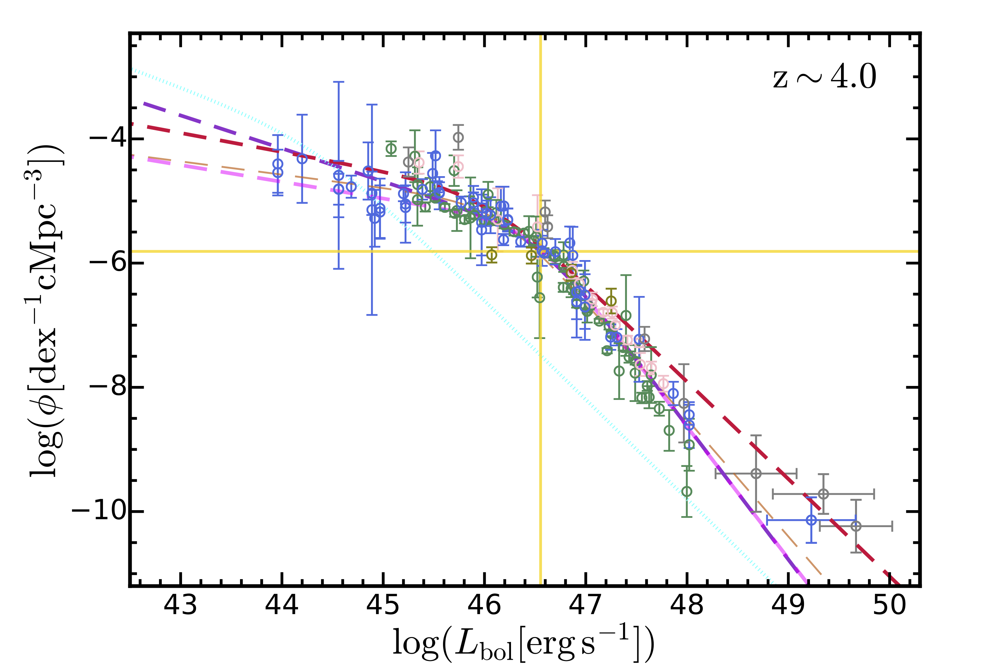
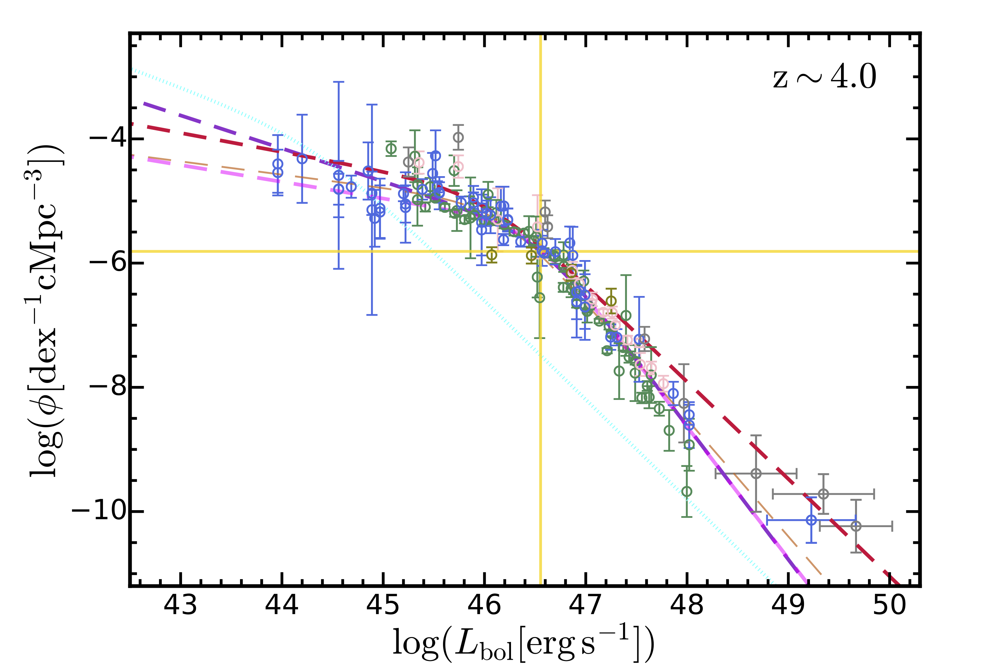

SMBHs and quasars in the early Universe
Relavant projects:
-
A model for the bolometric quasar luminosity functions
One of my highly cited paper. A public tool for computing bolometric/observed band luminosity functions of quasars across a wide redshift range. We have compiled a large dataset of quasar luminosity function measurements in far-UV, X-ray, IR and through emission lines in the past four decades. The observational data is paired with an updated quasar SED model (shown below), an updated extinction model based on the hydrogen column density distribution in Ueda et al. 2014, a new bolometric correction function.

Combining all the observational and theoretical updates, we construct a new model for the bolometric quasar luminosity function that extends out to redshift 7. The model-predicted QLFs are confronted with the observational data (moved to the bolometric plane) at z=2, 4, 6. This model implies that quasars are subdominant for hydrogen reionization in the Universe.
 

-
Seeding massive SMBHs with dissipative SIDM
This is an interesting topic related to alternative dark matter physics. Together with Huangyu Xiao at Fermi Lab, we consider the seeding of supermassive black holes (SMBHs) in the early Universe with dissipative dark matter. Our study showed that, with approporiate choice of parameters, a hit-and-stick type of dissipative dark matter (e.g. asymmetric dark matter nuggets) can collapse to massive SMBH seeds in rare, massive haloes, which could be the progenitors for the observed billion solar mass quasars at z≳7. This exotic seeding scenario will give rise to completely different assemble history of early SMBHs and quasar activities. We are exploring the observational signatures in a follow-up study.